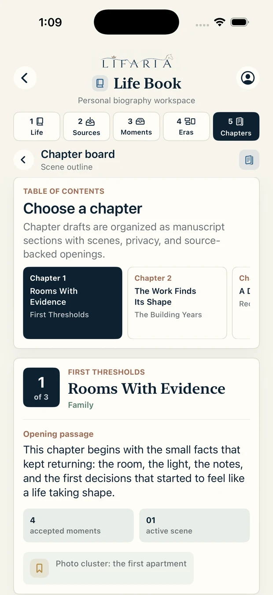

Choose a format
Start with an individual Life Book, then grow into future book types.

Life Book beta
Lifaria turns photos, notes, documents, and voice into a private, source-backed Life Book that stays in your hands.

Private biography workspace
Lifaria gathers the fragments that already hold a life and organizes them into moments, eras, and chapters without taking judgment away from the person whose story it is.
Life Book
Build from a living table of contents: accepted moments, remembered places, important people, and eras that can be renamed until they feel true.
Start with an individual Life Book, then grow into future book types.
Move from eras into editable chapter drafts without losing provenance.


Sources
The beta starts with selected uploads and notes. Later connections can be added deliberately, source by source, with the same review-first model.


Evidence review
Lifaria can surface meaningful moments, but the app keeps the supporting clues close: source clusters, dates, places, themes, and narrative signals remain visible before acceptance.
Approved moments can move into eras and chapter drafts.
Names, dates, emphasis, and interpretation stay editable.


Trust model
Lifaria treats privacy, consent, and ownership as core product features. The goal is not to automate your life story away from you. It is to help you find the shape and stay in charge.
No source, moment, chapter, invite, or export is shared without action.
Suggested memories remain connected to the source signals that created them.
Accept, reject, rename, rewrite, reorder, and export on your terms.
Limit AI to organizing, sequencing, tagging, and deduplicating.
Lifaria beta
Lifaria is for people who want to preserve, understand, and shape a life story from the material they already have.
Request early access